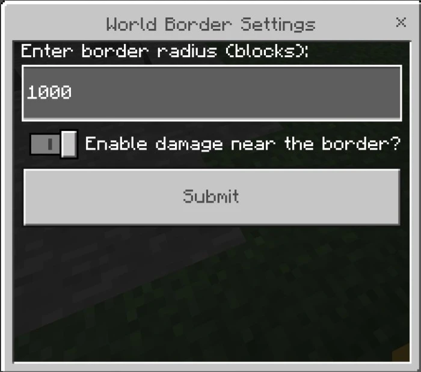

World Border Addon for Minecraft Bedrock Edition
Are you looking for a way to control world boundaries in Minecraft Bedrock Edition? This addon allows you to set a world border with a custom radius and an option to damage players who cross that border!
The UI
Features
- Customize world boundary radius: You can enter your desired value and change it at any time.
- Deal damage to players when they exceed the boundary: Prevent players from moving too far by dealing damage when they step outside.
- Teleport players back within the boundaries: If someone goes too far, they will be teleported back near the safe zone.
Video Preview
Frequently Asked Questions (FAQ)
1. How to open the border settings interface?
Admin can use the following command to open the settings interface:
/tag @s add showsizeui
This command will open the menu to adjust the radius and damage mode.
2. How to change the border radius?
After opening the settings interface, enter the number of blocks in the "Enter border radius (blocks)" field and then press confirm.
3. How to enable/disable damage when crossing borders?
In the settings interface, toggle the option "Enable damage near the border?" and then confirm.
4. What happens if I exceed the limit?
If damage is enabled, you will lose 1 heart each time you cross the border.
If you are outside the border, the system will bring you back to a position near the border.
5. Does the addon work in both the Nether and The End?
Yes, the addon applies borders to both the Overworld, Nether, and The End.
6. How to ensure the admin can use the settings interface?
Make sure the admin has the "admin" tag; if not, use the following command:
/tag @s add admin
Then use the command to open the interface:
/tag @s add showsizeui
Supported Minecraft Versions
- 1.21+